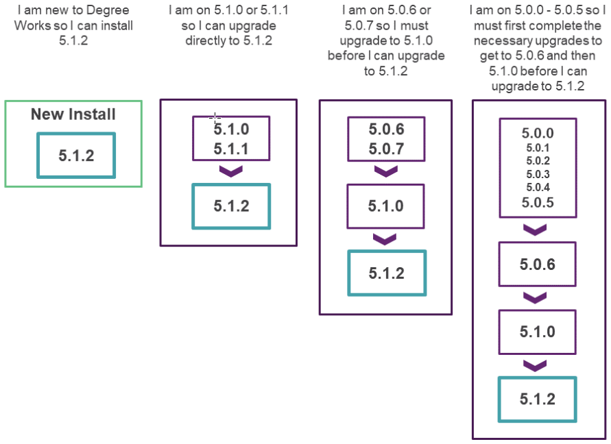

Release 5.1.2
Degree Works 5.1.2 includes new functionality, improves existing functionality, resolves change requests, and more.
General
Overview
The central themes of Release 5.1.2 include expanding the functionality offered in the Responsive Dashboard and Transit to meet the needs of the client base and enhancements to support Degree Works as a SaaS solution. Release 5.1.2 also meets customer satisfaction goals by delivering 7 improvements and 63 problem resolutions.
This release is a MINOR release so the version has been assigned as Release 5.1.2, and it will build on the baseline established by the previous MAJOR release, Release 5.1.0, and subsequent releases. This is still a significant release in terms of the product direction, and it continues to build on the infrastructure introduced for Cloud delivery.
Upgrade path
The Degree Works Release 5.1.2 supports a new installation or a direct upgrade path for existing customers currently on Release 5.1.0 or Release 5.1.1.

With the release of Release 5.1.2, Release 5.1.0 and Release 5.1.1 are in Maintenance Support, while Releases 5.0.0 – 5.0.7 are in Sustaining Support. Details about Ellucian Support Assurance can be found in article number 000038478.
All Degree Works versions before 5.0.0 are in End of Support as of January 1, 2021. If you are on a 4.x version of Degree Works, you must upgrade to at least Release 5.1.0 to process Release 5.1.2.
We encourage customers to stay current with releases so multiple jumps are not required when processing a new release upgrade.
If you are on any service pack level, the upgrade path you should follow is from your base release as service packs are included in the next release. For example, if you are on 5.1.1.2, you would follow the path of upgrading from Release 5.1.1 to Release 5.1.2.
Degree Works hardware and software requirements
Supported hardware architectures and associated operating systems
- Intel-based x86 running Red Hat Enterprise Linux 7.x or 8.x (64-bit)
- Intel-based x86 running Oracle Linux Server 7.x or 8.x (64-bit)
- Intel-based x86 running Red Hat Enterprise Linux 7.x or 8.x (64-bit)
- Intel-based x86 running Oracle Linux Server 7.x or 8.x (64-bit)
- IBM running AIX 7.x (64-bit)
- Sun SPARC platform running Solaris 11 (64-bit)
- HP Integrity Platform (IA64) running HP-UX 11.x (64-bit)
Supported RDBMS
Degree Works Release 5.1.2 supports Oracle 19c.
Supported browsers
Ellucian makes every effort to test and support the current versions of the following browsers at the time of a release:
- Google Chrome
- Mozilla Firefox
- Apple Safari
- Microsoft Edge
RabbitMQ
- RabbitMQ server v3.12
- RabbitMQ client v0.13.0 or v0.11.0
Java
Degree Works Release 5.1.2 requires Oracle Java Development Kit (JDK) or OpenJDK version 11 on both your classic and application servers.
GCC Compiler
Degree Works Release 5.1.2 requires GCC version 8.x on Red Hat Enterprise Linux and Oracle Linux Server.
Apache FOP
Degree Works requires Apache FOP version 2.6 on the classic server.
OpenSSL
Degree Works requires OpenSSL, including the openssl-devel package.
base64
Degree Works requires the base64 program on the classic server. This is typically included in a standard Linux installation but may need to be installed separately on servers with other operating systems.
For more details on all hardware and software requirements, see Degree Works Installation.
Enhancements
API highlights
Add health and monitoring endpoints to Degree Works applications
Support for the Spring Boot Actuator module was added to all Degree Works applications to enable monitoring data through the /about, /health, /metrics, /prometheus, and /status endpoints in application APIs. By default these endpoints are not enabled, but setting the new DW_ENABLE_MONITOR environment variable as true in the start script before deploying an application will enable this functionality.
For additional information about these endpoints, see Ellucian API Catalog > Degree Works API Catalog > [applicable module/topic] > Actuator section.
Audit highlights
Elective Credits Allowed should obey UCX DAP14 "Fall-thru courses count in the overall GPA" flag
When the CFG020 DAP14 Fall-through courses count in the overall GPA flag is set to No, all of the classes in Fall-through will now show as ECA-OVERFLOW because no fall-through classes count towards the overall credits. In addition, when this flag is No, you are no longer required to scribe a Credits qualifier (with or without Pseudo) in any block.
PDF from the Responsive Dashboard is missing the Freeze Information
If an audit has been saved with a description and/or freeze type, this information will now display on the PDF generated in Responsive Dashboard.
ArticulateAndAudit API not working
In Release 5.1.1, the ArticulateAndAudit API in API Services was obsoleted. It was rewritten as the Audit Requirements API and retrieves Degree Works requirements in the form of an empty XML audit for a given school, degree, major, and catalog year.
Banner highlights
CourseLink highlights
When CourseLink looks up a school for a mapping and doesn't find one a bad json data error is created
The CourseLink functionality has been modified to display only the transfer mappings of schools for which a RAD_ETS_MST record exists. Transfer mappings for schools that do not have a record will not display, preventing a JSON error.
It is not typical to have mappings for schools that do not have a RAD_ETS_MST record. If this is occurring at your site, it should be investigated.
Responsive Dashboard highlights
Priority Sorting for Goal/Degree Picklist
For students with multiple degree codes in the SIS (dual degree students), Degree Works allows the user to toggle between the degrees through a drop-down list. On initial page load, the degree that is first in the list is displayed, but the sort order is not based on a priority number coming from the SIS. With this enhancement, the degree codes now load in Responsive Dashboard and Ellucian Experience based on the priority order coming from the SIS.
Plan title changes automatically when the Active flag is unchecked
When a user opens an active plan and unchecks the Active flag, the title of the plan no longer changes to that of the most recently modified plan.
Planner still-needed is missing rules in if-statements if the first child rule is 100% complete
There was an issue in the Plans Still Needed sidebar and drawer when the first child in an if-statement was 100% complete. The remaining child rules were skipped by the still-needed logic. Now the incomplete child rules within an if-statement will display even when the first child rule is 100% complete.
Transit highlights
Allow contents of user class drop-down to be controlled by a flag in UCX-AUD012
In Release 5.1.1, a user class drop-down was added to RAD33 in Transit so the user can select which non-student user class should be applied to the IDs being extracted from Banner. However, UCX-AUD012 contains user classes that aren’t valid for RAD33, such as API, APP, and STU. A new Show in RAD33 flag has been added to the AUD012 User Class Codes, allowing the user class drop-down in the Transit RAD33 job to be filtered.
Schedule single jobs on a recurring basis in Transit
In Transit, in addition to scheduling a job to run at a future date and time, you can now schedule jobs to run on a recurring basis. Jobs can be scheduled to run on a daily, weekly, monthly, or yearly basis with either a specified end date or forever.
As part of this enhancement, access to schedule jobs now requires a Shepherd key. As part of the release configuration, this key must be explicitly assigned to users.
Save job parameters for reuse in Transit
The selection criteria and responses to questions for frequently run jobs can now be saved for reuse by any user who has been given access to this feature.
Updates
Database changes
There are several Transit database changes in Release 5.1.2.
The SCHEDULE_TIME field was removed from TRANSIT_JOB_INSTANCE.
The SAVED_JOB_ID field was added to TRANSIT_INPUT.
- TRANSIT_SAVED_JOB
- TRANSIT_SCHEDULED_REQUEST
Documentation
The documentation for this release is available on the Ellucian Documentation site. It can be viewed interactively and, if desired, can be exported in total or by topic. A logon for the Customer Center will be required to access the entire suite of documentation.
A small subset of user documentation can be found on the Ellucian Documentation site under the Use category. The Use category is available to all users, including those without a Customer Center login.
Transfer Equivalency Self-Service will continue to have online help built in because the target audience for this application is a prospective student.
You can find Degree Works product documentation in the Customer Center under Resources > Documentation > All Documentation > selecting Degree Works.
Degree Works API documentation is also available in the Customer Center under Resources > Documentation > All Documentation > API Catalog.
Degree Works 5.1.2 Service Pack 1
This patch corrects defects reported with Degree Works Release 5.1.2.
Click Attachments  on the side panel to download the service pack general information and instructions.
on the side panel to download the service pack general information and instructions.
Degree Works 5.1.2 Service Pack 2
This patch corrects defects reported with Degree Works Release 5.1.2.
Click Attachments on the side panel to download the service pack general information and instructions.